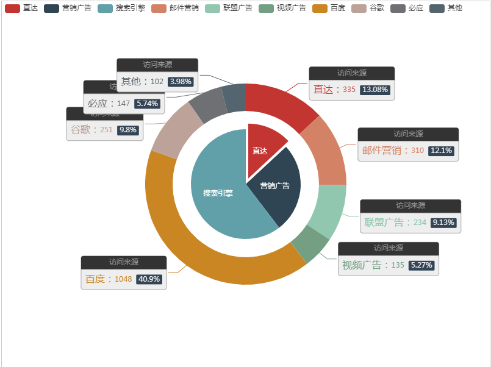

第一步准备一个json文件echarts.json（名字无所谓），用来模拟从后台获取数据
{
"name":["直达","营销广告","搜索引擎","邮件营销","联盟广告","视频广告","百度","谷歌","必应","其他"],
"data":[
{"value":335, "name":"直达"},
{"value":310, "name":"邮件营销"},
{"value":234, "name":"联盟广告"},
{"value":135, "name":"视频广告"},
{"value":1048, "name":"百度"},
{"value":251, "name":"谷歌"},
{"value":147, "name":"必应"},
{"value":102, "name":"其他"}
],
"little":[
{"value":335, "name":"直达","selected":"true"},
{"value":679, "name":"营销广告"},
{"value":1548, "name":"搜索引擎"}
]
}
第二步在页面直接引用JS文件
<script src="js/echarts.min.js" type="text/javascript" charset="utf-8"></script>
<script type="text/javascript"src="js/jquery.min.js"></script>
第三步在body中准备一个容器，写好样式，用来显示图表
<div id="container"></div>
<style>
#container{
width: 800px;
height: 600px;
border: 1px solid #ccc;
margin: 0 auto;
}
</style>
最后一步在js中初始化echarts对象，实现动态加载数据。
<script type="text/javascript">
var container = document.getElementById('container');
// 初始化加载对象myContainer
var myContainer = echarts.init(container);
//未获取数据前，显示loading加载动画
myContainer.showLoading();
function bindData() {
//为了效果明显，我们做了延迟读取数据
setTimeout(function() {
//异步加载数据,get请求我们刚刚准备的json文件,正式开发中调用相应的接口
$.get('echarts.json', function(res) {
console.log(res)
//获取数据后，隐藏loading动画
myContainer.hideLoading();
myContainer.setOption(
option = {
tooltip: {
trigger: 'item',
formatter: "{a} <br/>{b}: {c} ({d}%)"
},
legend: {
orient: 'horizontal',
x: 'left',
data:res.name
},
series: [
{
name:'访问来源',
type:'pie',
selectedMode: 'single',
radius: ['0', '30%'],
label: {
normal: {
position: 'inner'
}
},
labelLine: {
normal: {
show: false
}
},
data:res.little
},
{
name:'访问来源',
type:'pie',
radius: ['40%', '55%'],
label: {
normal: {
formatter: '{a|{a}}{abg|}\n{hr|}\n {b|{b}：}{c} {per|{d}%} ',
backgroundColor: '#eee',
borderColor: '#aaa',
borderWidth: 1,
borderRadius: 4,
// shadowBlur:3,
// shadowOffsetX: 2,
// shadowOffsetY: 2,
// shadowColor: '#999',
// padding: [0, 7],
rich: {
a: {
color: '#999',
lineHeight: 22,
align: 'center'
},
abg: {
backgroundColor: '#333',
width: '100%',
align: 'right',
height: 22,
borderRadius: [4, 4, 0, 0]
},
hr: {
borderColor: '#aaa',
width: '100%',
borderWidth: 0.5,
height: 0
},
b: {
fontSize: 16,
lineHeight: 33
},
per: {
color: '#eee',
backgroundColor: '#334455',
padding: [2, 4],
borderRadius: 2
}
}
}
},
data:res.data
}
]
});
})
}, 1000);
}
bindData();
</script>
